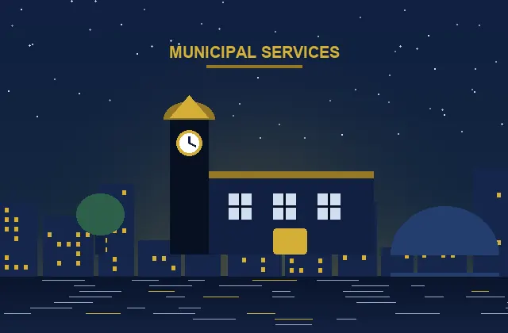
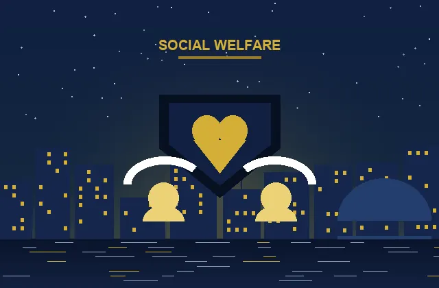

Digital Public Administration
Simplifying Government.
Empowering Citizens.
Experience the next generation of public administration. Apply for verified civil credentials, manage business permits, file civic revenue, and track requests through one unified, secure digital platform.
Smart Services Directory
Find What You Need Faster.
Instant access to verified civic documentation, applications, and department portals.
Showing all 8 core categories
Civic Directory
Core Government Services
Citizen Services
Comprehensive public registry access, family status updates, voting registration, and community outreach assistance.
Digital Certificates
Instant official certification for birth, marriage, residency, and verified police clearance records with QR validation.
Identity Services
Secure national biometric authentication, smart citizen card renewal, digital signature keys, and child registries.
Tax Services
Property tax assessment, municipal levy declarations, instant online duty payments, and automated clearance statements.
Education Services
Public school enrollment, university scholarship matching, authenticated academic transcript verification, and student aid.
Employment Services
Civil service career board, accredited vocational training programs, labor rights mediation, and workforce support claims.
Transport Services
Driver licensing, vehicle registration renewal, digital public transit passes, and smart commercial fleet compliance.
Welfare Services
Family support allowances, senior citizen welfare, disability assistance schemes, and accessible community housing subsidies.
The Citizen Journey
How Digital Government Works
From initial inquiry to confirmed service delivery in 5 clear, accountable stages.
1. Apply
Submit your verified request using your digital identity profile in minutes.
2. Verify
Automated cryptographic validation matches registry records in real time.
3. Process
Inter-departmental routing guarantees rapid assessment and SLA adherence.
4. Approve
Authorized civic officers sign off using verifiable digital governance stamps.
5. Receive
Download signed tamper-proof credentials directly to your citizen wallet.
Next-Gen Delivery
Featured Digital Services
State-of-the-art self-service portals eliminating physical queues and paperwork permanently.
Unified National Digital ID
One cryptographic credential granting instant, authenticated access to over 150 government, healthcare, and educational portals securely.
Certified Civil Records Registry
Request, authenticate, and download legally binding birth, marriage, and probate certificates with embedded tamper-proof verification hashes.
 Real-Time Tracking
Real-Time Tracking
Integrated Business Licensing
Establish a legal municipal enterprise in under 24 hours. Automated clearances across zoning, revenue, and health departments simultaneously.
Official Document Verification
Public-facing validation terminal allowing banks, employers, and civic bodies to verify authenticity of any issued document instantly.
Civic Administration
Government Departments
Connecting you directly with specialized administration teams, leadership, and public desks.
Department of Revenue & Treasury
Fiscal stewardship, municipal property valuations, electronic taxation, budget transparency, and citizen payment gateways.
Department ServicesDepartment of Education & Skills
Administering public school systems, early childhood learning, academic standards, higher education grants, and literacy.
Department ServicesDepartment of Transport & Mobility
Smart transit management, road safety infrastructure, public transit electrification, and driver credential compliance.
Department ServicesDepartment of Health & Community Care
Preventative wellness, community health clinics, emergency medical logistics, and public hygiene surveillance.
Department Services
Department of Municipal Services
Zoning approvals, public works, sanitation management, civic water utilities, and green urban architectural planning.
Department Services
Department of Social Welfare
Community resilience, vulnerable citizen advocacy, family support programs, disability access, and housing support.
Department ServicesCivic Value Proposition
Citizen Benefits of Modern Governance
Engineered from the ground up to protect your time, safeguard your data, and simplify public life.
Faster Services
Automated algorithmic processing cuts turnaround from 14 business days to under 60 seconds for verified digital certificates.
Transparent Processes
Every milestone of your application is tracked live with complete audit timestamps and responsible department logs.
Secure Data
Encrypted using government-grade 256-bit cryptography and decentralized zero-knowledge proofs to guard citizen privacy.
Easy Access
Fully compliant with universal accessibility standards, responsive on any mobile device, and optimized for low bandwidth.
Reduced Paperwork
100% digital workflows save an estimated 12 million sheets of paper each year while eliminating physical couriers.
24/7 Availability
Government that never sleeps. Apply for licenses, make tax payments, and file grievances at your convenience day or night.
Cryptographic Assurance
Security & Trust Architecture
Our zero-trust digital infrastructure ensures citizen data remains confidential, immutable, and strictly under citizen control.
Citizen Authenticated
Multi-factor biometric handshake ensures that only verified individuals can request sensitive records.
Identity Shield
Zero-knowledge cryptographic tokens verify eligibility without exposing raw personal documents.
Registry Verification
Automated ledger matching checks against official civic registries with instant audit tracking.
Secure Service Delivery
Encrypted credentials delivered straight to your secure device with tamper-evident digital signatures.
Real Public Impact
Citizen Stories & Experiences
Discover how STACKLY Government transforms everyday interactions for residents and local businesses.

“Renewing our municipal retail licenses used to require an entire day off work standing in administrative lines. With STACKLY, my permit arrived in my digital wallet before my morning coffee was finished.”

“When our daughter was born, registering her birth and ordering official certified records was completely painless. The real-time status notifications gave our family total peace of mind.”
Unified Public Platform
Government Services, Simplified for Everyone.
Join over 2 million citizens experiencing effortless public administration today. Open your citizen portal account in under 60 seconds.